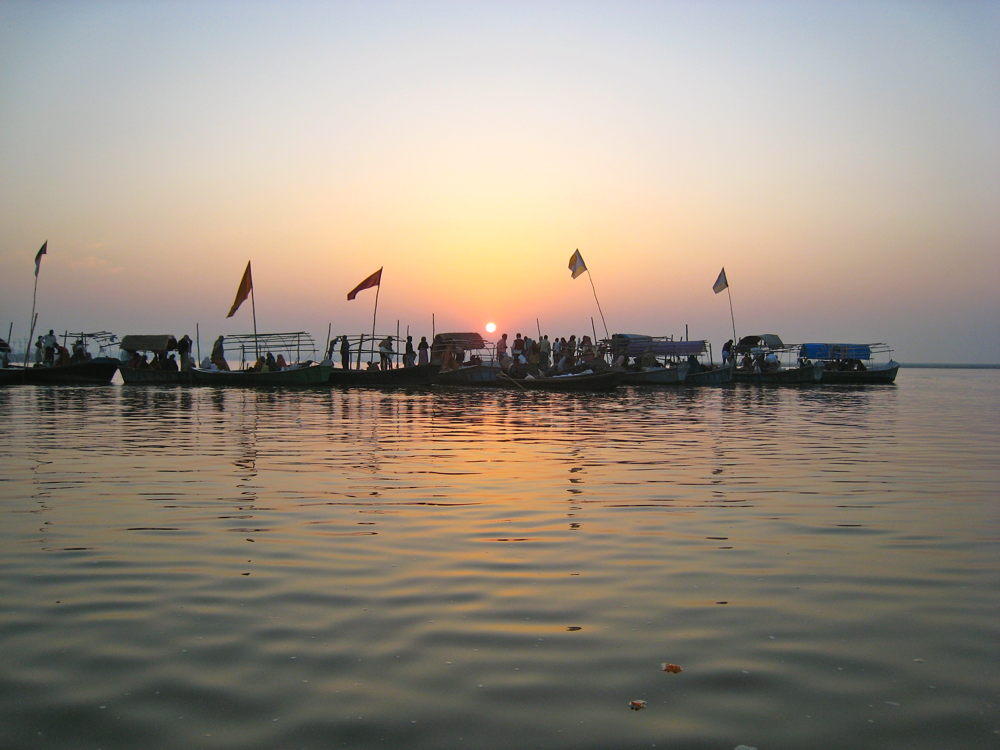

|  |
Triveni Sangam is the confluence of the Ganges (Ganga), the Yamuna, and the mythical Saraswati River. Triveni Sangam is located at Prayag - the area of Prayagraj neighbouring the confluence; for this reason, the confluence is also sometimes referred to as Prayag.
At Triveni Sangam, the Ganges and the Yamuna can be identified by their different colours - the water of the Ganges is clear while that of the Yamuna is greenish in colour. The third river, the mythical Saraswati, is called invisible.
The auspiciousness of the confluence of two rivers is referred to in the Rigveda, which says, "Those who bathe at the place where the two rivers, white and dark, flow together, rise up to heaven."
A place of religious importance and one of the sites for the historic Kumbh Mela held every 12 years, over the years it has also been the site of the immersion of ashes of several national leaders, including Mahatma Gandhi in 1949.